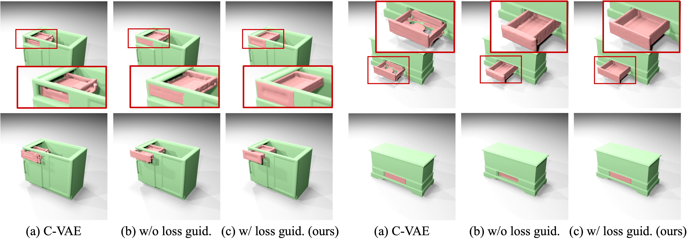
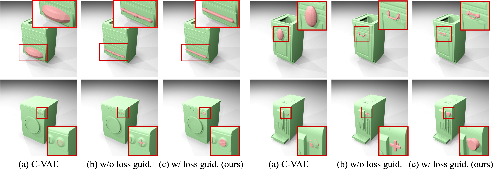

Abstract

Interactable objects are everywhere, yet modeling their physics remains challenging due to inter-part motion constraints. We tackle this by proposing a diffusion-based part generation model that ensures physically plausible part completion. Our approach leverages classifier-free guidance for geometric conditioning and introduces stability and mobility losses to enforce physical constraints. We further enable dependent part generation, advancing toward sequential modeling of complex object hierarchies. To evaluate physical plausibility, we introduce a motion success rate metric. Our model surpasses baselines in shape and physical metrics and demonstrates practical utility in 3D printing, robot manipulation, and sequential part generation.
Framework
We train a pose proposal model to predict the missing part's bounding box and a latent diffusion model conditioned on the input object's point cloud and the missing part's bounding box within the latent space of part SDF. During inference, the trained pose proposal model first predicts the missing part's bounding box. We then apply the proposed physical-aware losses (contact and collision losses in static or dynamics states) to guide the sampling process.
Abstract
Interactable objects are everywhere, yet modeling their physics remains challenging due to inter-part motion constraints. We tackle this by proposing a diffusion-based part generation model that ensures physically plausible part completion. Our approach leverages classifier-free guidance for geometric conditioning and introduces stability and mobility losses to enforce physical constraints. We further enable dependent part generation, advancing toward sequential modeling of complex object hierarchies. To evaluate physical plausibility, we introduce a motion success rate metric. Our model surpasses baselines in shape and physical metrics and demonstrates practical utility in 3D printing, robot manipulation, and sequential part generation.
Experiments: Qualitative Comparisons
Generating self-moving part (drawers and hinge doors)
Generating dependent part (handles and knobs)
Applictation: Sequential Part Generation
We use our method to first generate the self-moving parts and then generate the dependent parts.
Applictation: Simulation for Robot Manipulation
The part generated by our method can be well integrated into existing robot simulation environments.
Applictation: 3D Printing
The generated parts can be directly used for 3D printing, demonsrating their physical plausibility.